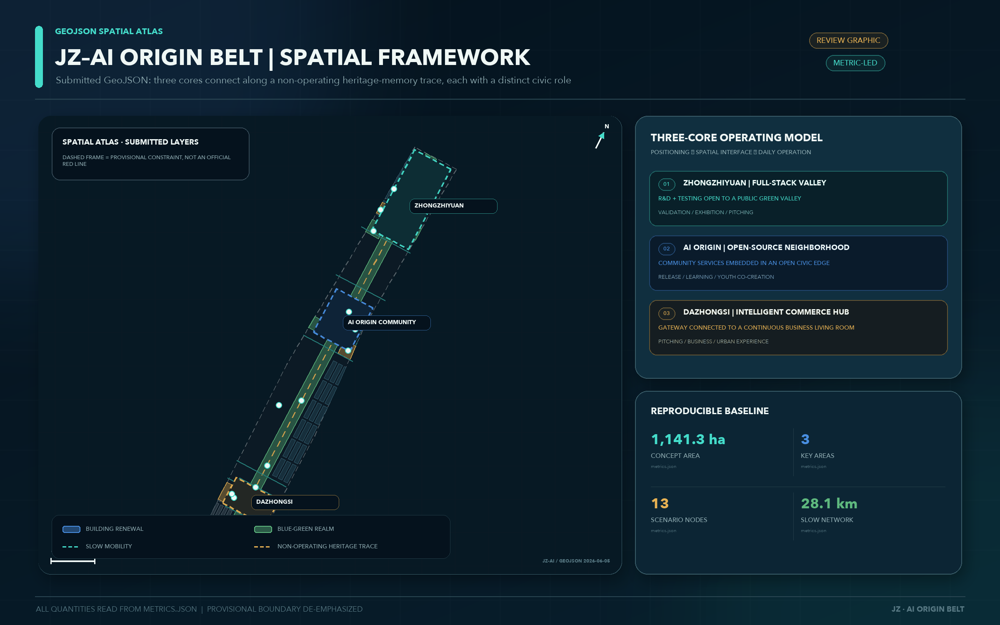
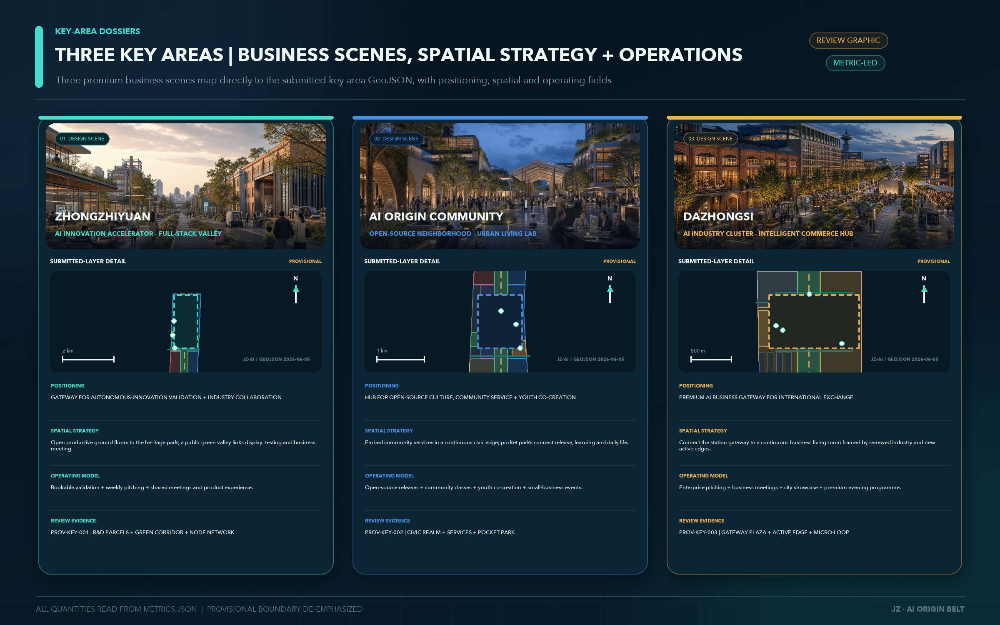
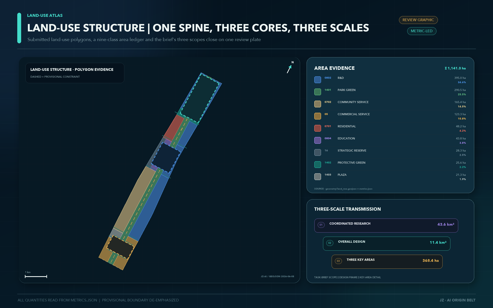
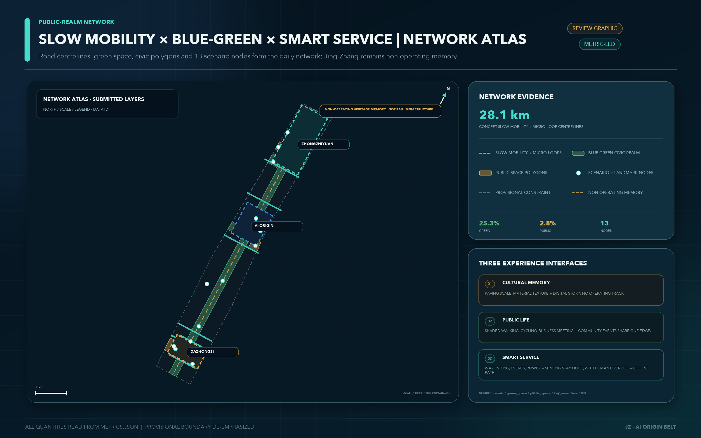
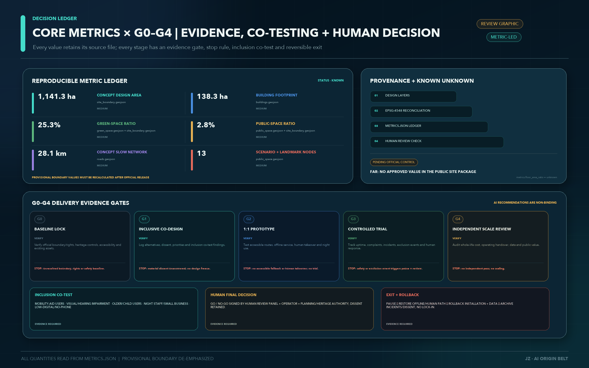

Centennial Jing-Zhang AI Innovation Belt · Urban Design Concept中文
JZ-AI Origin Belt
CENTENNIAL JING-ZHANG AI ORIGIN BELT
One axis, three cores, two loops and multiple nodes. Centennial engineering spirit grounds a verifiable, reversible and incremental AI innovation belt linking R&D collaboration, technology transfer, intelligent commerce and public experience.
ZhongzhiyuanR&D headquarters · full-stack valleyBeijing AI Origin CommunityInternational collaboration · open-source neighborhoodDazhongsiLaunches and investment · intelligent commerce hub
FIRST-VIEWPORT EVIDENCE
Executive summary and review evidence
One spine, three cores and two loops; 10+3 bounded scenarios; a six-layer AI stack; and G0-G4 reversible delivery gates. The first viewport reports package evidence and local gates only; official review remains external.
SPATIAL EVIDENCE · MASTERPLAN / KEY AREAS

Masterplan · one spine, three cores, two loops

Three cores · differentiated roles, shared civic base
LOCAL GATES PASS · OFFICIAL REVIEW IS EXTERNAL TO THIS PACKAGE · CONCEPT ONLY · PROVISIONAL GEOMETRY
01 / MASTERPLAN
Overview map and three planning scopes
From the 43.6 sq km coordinated research area, through the roughly 11.4 sq km overall design area, to three key areas totalling about 368.4 ha: the scales address ecosystem coordination, renewal structure and district delivery respectively.
43.6 km²
Coordinated research area
Studies the AI ecosystem, future urban form and cross-regional interfaces. This announcement figure is not recalculated from a package boundary.about 11.4 km²
Overall design area
Organises land use, buildings, mobility and utilities, blue-green systems and renewal projects within the provisional substitute boundary.about 368.4 ha
Key-area scope
District-level detailed concepts for the provisional extents of Zhongzhiyuan, Beijing AI Origin Community and Dazhongsi.
Master structure
One axis · three cores · two loops · multiple nodes
One axis: the Jing-Zhang heritage-park cultural intelligence axis for walking, ecology, interpretation and public AI experiences.
Three cores: Zhongzhiyuan Full-Stack Valley, Origin Community Open-Source Blocks and Dazhongsi Intelligent Commerce Hub.
Two loops: a slow-mobility vitality loop and blue-green ecological loop stitching campuses, parks, neighbourhoods and public-transit gateways.
Multiple nodes: 10 AI scenarios and 3 pilgrimage-landmark concept nodes form the Origin Trail.
Boundary notice: the map uses the site package's rough substitute boundary, marked provisional_constraint and official_boundary=false. It supports generation, self-checking, visualisation and design discussion only. All layers and area metrics must be recalculated after official boundaries are released.
Exact taskbook mapping
Three positions × five functions × three areas and two wings
Every formal term enters a spatial carrier, scenario and acceptance path rather than remaining a slogan.
POSITION 01
Centennial Jing-Zhang Cultural Belt
Responds to “global voice in AI governance” through engineering ethics, interpretable governance and contributor memory; carried by the AI Origin Community and non-operating heritage cultural axis.
POSITION 02
Urban AI Life Experience Belt
Responds to the “AI+ scenario-empowerment paradigm” and “intelligent AI vitality city”; carried by Dazhongsi AI Cluster and the Xiaoyuehe Scenario-Empowerment Wing.
POSITION 03
AI Convergence Innovation Belt
Responds to the “full-stack indigenous AI innovation system” and “world-class AI innovation ecosystem”; carried by Zhongzhiyuan and the Zhongguancun Technology-Service Wing.
Five-function loop: full-stack indigenous AI innovation system → world-class AI innovation ecosystem → AI+ scenario-empowerment paradigm → intelligent AI vitality city → global voice in AI governance. The three areas and two wings are AI Origin Community, Zhongzhiyuan AI Acceleration Area, Dazhongsi AI Industry Cluster, Zhongguancun Technology-Service Wing and Xiaoyuehe Scenario-Empowerment Wing. The wings are collaborative roles, not statutory boundaries.
02 / MEASURABLE
Core metrics
The values below are recalculated from submission GeoJSON in EPSG:4548. FAR, building heights, road redlines and operational performance lack official prerequisites and therefore remain explicitly unknown / pending.
11,412,825 m²
Overall area · provisional boundary
geometry/site_boundary.geojson
1,383,040 m²
Building footprints · concept layout
geometry/buildings.geojson
25.3%
Green ratio · recalculated
geometry/green_space.geojson
2.8%
Public-space ratio · polygons only
geometry/public_space.geojson
28.1 km
Concept slow-mobility and micro-circulation network
geometry/roads.geojson
10 + 3
AI scenarios + landmark concept nodes
geometry/public_space.geojson
3
Key detailed-design areas
geometry/key_areas.geojson
16 / 42 / 9
Land-use zones / building clusters / corridors
land_use · buildings · roads
03 / EXPERIENCE
Three premium business-and-technology scenes
A shared “premium, adaptable, low-intrusion” language spans the three cores: dark anodised aluminium, warm timber, matte stone, integrated power and soft edge lighting. Technology is embedded in furniture and landscape edges instead of relying on glare or oversized screens.
R&D HQ · prototype display
Zhongzhiyuan · Full-Stack Valley
A park-operator role manages R&D meetings, standards co-creation and prototype demonstrations. Reconfigurable meeting tables, ergonomic chairs, transparent displays and edge-compute ports support everyday professional use.
A campus–park–neighbourhood joint-operator role manages open-source releases, technology transfer and youth co-creation. E-ink wayfinding, paper alternatives and mobile business furniture serve both professional events and daily community life.
A commercial-operator role and public-culture team jointly manage launches, investor matching and evening programming. Matte-stone meeting tables, switchable roadshow interfaces, service robots and edge-intelligent lighting strengthen the global business gateway.
Scene status: the three generated images explain spatial atmosphere and intended use only. They are not existing-condition photography, statutory boundaries, metric evidence or engineering-feasibility proof. Railway heritage appears only as discontinuous brass gauge lines, flush sleepers and interpretation points in paving—never continuous rail, ballast, platforms or an operating-rail cue.
04 / SPATIAL SYSTEMS
Land use, slow mobility, blue-green public space and building renewal
These are interpretive drawings rather than raw-data screenshots: provisional boundaries and background remain low contrast, while corridors, nodes, public space and design judgements lead. GeoJSON, metrics and matrices remain authoritative.

Land-use zoning and three scopes
Sixteen seamless concept zones cover R&D, commerce, housing, community services, education, green space, plazas and strategic reserve. Recheck against official planning conditions.

Public transit, slow mobility and blue-green public space
The heritage greenway, five east–west links, three district loops and Qinghe–Xiaoyuehe corridors form a continuous network. The heritage trace is not restored as an operating railway; engineering alignments and road redlines remain pending.
Key areas, buildings and renewal projects
Forty-two footprint clusters are managed through retain, renovate, renew, new-build and pending-confirmation methods. They are not an existing-condition survey or parcel-level demolition decision.
NORTH CORE
Zhongzhiyuan · Full-Stack Valley
Garden R&D blocks, a Qinghe low-carbon frontage, governance sandbox and Full-Stack Tower exhibition hall. Provisional extent about 192.1 ha.
CENTRAL CORE
Origin Community · Open-Source Blocks
Campus–park–neighbourhood stitching, a technology-transfer street, open-source plaza and talent services. Provisional extent about 104.3 ha.
SOUTH CORE
Dazhongsi · Intelligent Commerce Hub
Public-transit gateway, four-quadrant walkability, intelligent-device display and trade, data reception and global roadshows. Provisional extent about 72.0 ha.
Renewal project list · all items are concept advice
ID
Renewal project
Type
Prerequisites before launch
JZ-01
Heritage cultural-axis greenway connection
Public space / slow mobility
Corridor ownership and ring-road crossing conditions
JZ-02
Dazhongsi four-quadrant pedestrian link and roadshow lounge
Station integration / operations
Station, junction and utility conditions
JZ-03
Origin Community open-source blocks and transfer street
Urban renewal / industry services
Campus boundary, ownership and ground-floor uses
JZ-04
Zhongzhiyuan Qinghe innovation frontage and low-carbon corridor
Blue-green / industry display
River blue line, ecology and flood conditions
JZ-05
Edge-compute hubs and new-infrastructure prototypes
New infrastructure / public services
Energy, safety assessment and operator
JZ-06
Xiaoyuehe–Qinghe blue-green ecological corridor
Blue-green space
Blue line, sponge-city and ecology conditions
JZ-07
Jing-Zhang AI Contributor Avenue and honour display
Public culture / brand
Public-space permits and copyright clearance
JZ-08
Global AI Week public route
Operations / brand
Event approval and safety
05 / REGIONAL INTERFACES
Regional collaboration as auditable interfaces
The concept defines protocol templates, responsibility roles and evidence formats only. It invents no projects, institutional participation or recruitment promises. Joint trials begin only after written operator confirmation.
Need brief
Data and IP boundary
Joint trial
Independent / public review
Replication handbook
Interface
Origin Belt output
Potential partner input
Verifiable evidence
Exit condition
Beiwei Community
Accessibility audit and AI daily-service prototype
Resident co-testing issue list
Anonymous records and remedy closure
Unresolved public objection or privacy risk
Future Science City
Open-source release, investment and enterprise-service interface
Engineering needs and talent events
Bilaterally confirmed trial charter and review
No accountable operator
Huairou Science City
Urban scenarios and science-communication space
Scientific questions and facility-derived leads
Public-source and IP-boundary register
Unclear source or IP
Beijing E-Town
Public urban scenarios and user feedback
Robot and terminal pilot capacity
Safety review, human takeover and fault log
Safety gate not passed
Beijing–Tianjin–Hebei
Open-source event brand and scenario handbook
Cross-city feedback and talent network
Versioned handbook, replication record and annual review
Result not reproducible
FULL STACK / agent.2
Full-stack indigenous AI innovation · six-layer evidence chain
Every layer binds a spatial carrier, responsible role and exit evidence. A failed lower layer blocks the upper application from trial operation.
01 Compute hardware
Zhongzhiyuan + edge hubs
Technical/energy roles; energy, cooling, offline/power-loss and maintenance logs.
02 System framework
Isolated governance sandbox
Platform/safety roles; versions, interfaces, fault injection and human takeover.
03 Data / models
Data-factor salon
Data/legal/assessment roles; provenance, licence, data/model cards and deletion.
04 Agents / tools
Open-source hall + transfer street
Community/technology manager; task bounds, tool permissions, citations, errors and human final review.
05 Applications
10 scenes + 3 testbeds
Scenario operators/user representatives; usability, access, complaints, incidents and conversion tickets.
06 Safety governance
Red team + annual public review
Independent/public/local roles; privacy impact, dissent and remedy closure.
Permission boundary: hardware does not directly obtain personal data; models do not directly decide public intervention; agents cannot exceed tool permission; relevant people make final judgments on public outputs.
06 / AI+ SCENARIOS
10 AI scenario cards + 3 industry testing scenarios
Each scenario states location, daily operation and governance boundary. Every testing scenario is a reversible concept prototype requiring approval, safety review and privacy-impact assessment before operation.
#
Scenario card
Spatial location
Operator role / use
Governance boundary
01
Open-Source Release Hall
Origin Community
Releases, contribution display and mini roadshows
Cases and marks require clearance
02
AI Governance Sandbox
Zhongzhiyuan
Standards, safety evaluation and red-team display
Isolated environment and human supervision
03
Edge-Compute Hub
Dazhongsi and corridor nodes
Lightweight new infrastructure and experience interface
Separate authorisation and energy audit
04
AI Slow-Mobility Wayfinding
Heritage axis
Gap detection and interpretable guidance
No personal trajectory collection
05
International Roadshow Lounge
Dazhongsi
Display, negotiation and media release
Event approval and content clearance
06
Qinghe Low-Carbon Innovation Corridor
Zhongzhiyuan riverfront
Blue-green space and technology display
Ecology and flood safety first
07
Near-Campus Technology-Transfer Street
Origin Community
Incubation, legal, IP and investment services
Research results require authorisation
08
Data-Element Reception Lounge
Dazhongsi
Compliant, auditable data-service interface
Minimisation, logging and human review
09
AI Daily-Life Service Street
Community–commerce edge
Medical, education, legal and daily-service access
No commercial profiling; staffed alternative
10
Global AI Week Route
Belt-wide public space
Walkable and shareable public experience
Event and safety approval
Three industry testing scenarios
T1 · Low-speed shuttle and delivery test section
Limited hours and segments, human supervision and immediate withdrawal; tests safe takeover, vulnerable pedestrian priority and anomaly logs.
T2 · Urban-agent-assisted public-space management
Detects slow-mobility gaps, maintenance needs and event-safety alerts. The agent only assists; people review every intervention decision.
T3 · Building–campus energy and compute coordination
Tests interpretable coordination of distributed energy and compute loads, beginning with isolated simulation before professional assessment.
Five core personas
Open-source developers, startup teams, enterprise and business visitors, nearby residents, and university staff and students. Scenarios map to release and collaboration, affordable trials, display and meetings, low-disturbance daily life, and technology transfer.
Three pilgrimage-landmark concept nodes
Jing-Zhang Railway Memory Hall, AI Origin Monument Plaza and Full-Stack Tower Exhibition Hall. Together with the Jing-Zhang AI Contributor Avenue, they carry history, honour and open-source culture without entertainment-led landmarking.
07 / DELIVERY
G0–G4 stage gates and inclusion co-testing
A project enters the next stage only after prior evidence is archived. Roles are explicit without invented commitments: urban-design/heritage, local public authority, park/commercial operations, technical operations, independent reviewers and public representatives share accountability.
L1 · Statutory base
Professional procedure decides
Official boundaries, land use, redlines, ownership, utilities, heritage and intensity. AI, operators and concept imagery cannot alter them automatically.
L2 · Urban-design guidance
Multidisciplinary review
Axes, frontages, public space, slow mobility, blue-green systems and character; only versioned pilot spaces and safety boundaries pass to L3.
L3 · Reversible operating plug-ins
Managed through G0–G4
AI scenes, business furniture, wayfinding, events and light devices. Evidence informs the next professional review but never changes statutory control automatically.
Integrated-planning innovation: de-identified and human-reviewed evidence on use, complaints, access, energy, safety and maintenance may inform the next L2 iteration. Any L1 implication must re-enter statutory procedure; an algorithmic closed loop never takes legal effect.
G0
Baseline
Existing-condition survey, ownership and heritage checks, accessibility audit and initial privacy screen.
Stop: boundary/ownership conflict or unclear sensitive-data provenance.
G1
Co-design
Needs and dissent register for residents, universities, firms, visitors and vulnerable groups, with written responses to material objections.
Stop: unresolved exclusion, night disturbance or accessibility impact.
G2
Prototype
1:1 furniture/wayfinding mock-up, device offline mode, safety test and human-takeover test.
Stop: no human takeover, operator or safety accountability chain.
G3
Trial
Uptime, event-changeover time, satisfaction, complaint and incident logs; a confirmed operator locks definitions and minimum values.
Stop: incident, privacy event or repeated threshold failure.
G4
Scale
Independent review, whole-life cost review, open replication handbook and professional-approval route.
Stop: irreproducibility, unsustainable cost or negative professional review.
Long-term operations loop
Apply → assess → open → review; spring Developer Week, summer Scenario Open Days, autumn Culture–AI Biennale and winter Contributor Conference. These are mechanism proposals, not government programmes or funding promises.
Inclusion co-testing seats · no “average user” substitutes for vulnerable groups
Wheelchair and mobility-aid users
Test continuous clear width, gradients, turning space and stopping places beside furniture.
People with visual or hearing impairments
Test tactile, audio, high-contrast and non-colour-only multimodal wayfinding.
Older people, children and caregivers
Test lighting, rest intervals, edge protection and caregiver sightlines.
Night workers, cleaners, security staff and small merchants
Test evening safety, servicing, noise and business impacts.
People with low digital literacy or no smartphone
Verify that every service has a staffed and paper alternative.
Public acceptance record
Report participant structure, unresolved dissent, before/after remedies and exit decisions. Collect no biometrics or personal trajectories, and publish more than average satisfaction.
08 / OPEN CO-CREATION & RIGHTS
Co-creation charter, continuous collaboration and rights boundary
The taskbook is a public acceptance contract for every iteration, not a one-off delivery label. See compliance_matrix.json and the copyright ledger for exact mappings.
charter.1–5
Public interest · public or cleared sources only · concept advice never bypasses statutory approval · AI-native innovation · structured and human-/machine-readable outputs.
charter.6–10
Generation-method and limit disclosure · final human/professional judgement · public knowledge · durable contributor/version records · human dignity, welfare and capability enhancement.
Continuous loop
Sync main/inputs → reread sources, Issues/PRs and selected peer work on demand → update provenance/assumptions/evidence → rerender, finalize and four-gate self-check → preflight and full readback → resubmit.
Rights snapshot: the underlying model for three OpenAI concept scenes was not exposed and is recorded as unknown; the original logo has not undergone a trademark search; six cases are adjacent factual citations only, with no copied third-party images or marks. PDF tools, font names, embedding, licences and viewer-compatibility boundaries are individually logged; no font program with unverified rights is embedded. External publication, account actions or third-party contact require the relevant human authorization.
09 / EVIDENCE INDEX
agent.1–agent.6 task coverage and evidence index
The matrix indexes locatable evidence; it never substitutes a “covered” label for design content. compliance_matrix.json remains the complete mapping for announcement sections 1.3 / 1.4 / 1.5 and the six agent tasks.
Task
Visible design response
Structured / drawing evidence
Status
agent.1 Concept and coordination
Name, English name, original logo, master structure, three scopes and five regional interfaces
Self-check status, sources, assumptions and status boundaries
Self-checks demonstrate internal package consistency; they are not official acceptance, professional approval or a delivery promise. Rerun and read back all checks after every file update.
✓
Deterministic validation
PASS
✓
Spatial review
PASS
✓
Visual packaging
PASS
✓
Professional evidence
PASS
Ten co-creation principles
charter.1–10: public interest · public/cleared sources · concept boundary · AI-native mechanisms · structured and readable outputs · generation disclosure · final human judgement · public knowledge · durable credit · human-centred governance.
Continuous participation loop
Sync main and required inputs → reread the brief/sources/Issues/PRs and selected peer work on demand → update sources, assumptions and evidence → rerender, finalize and run four-gate self-check → participant preflight and full readback → resubmit. External publication, account actions and third-party contact require human authorization.
Three concept scenes were made with the OpenAI image-generation tool; the underlying model was not exposed and is recorded as unknown. The original logo has not undergone a trademark search.
The copyright statement records PDF tools, font names, embedding, licences, redistribution and viewer-compatibility boundaries; no font program with unverified rights is embedded.
Key assumptions
A-BOUNDARY-001: boundary is provisional; recalculate the package after official release.
A-SCENARIOS-001: scenarios, projects, events and operations are concept advice.
A-DATA-001: only public or cleared inputs are used; generated media is explanatory.

Metrics and evidence chain
The figure explains how structured files produce metrics. Final judgements must return to GeoJSON, JSON and the current self-check results.
Status boundary: this proposal claims no official approval, approved regulatory plan, final ownership, final construction scale, institutional participation, committed investment or delivery guarantee. Every spatial, scenario, landmark, event, regional-collaboration and operations item is concept advice, a reference scheme or material for professional teams to deepen. FAR, building heights, road redlines and performance targets remain pending.